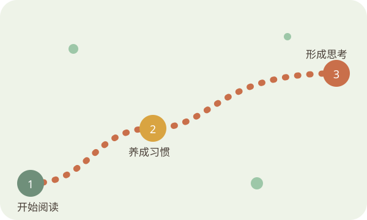

GROWTH
阅读带来的成长
变化不是突然发生的，是一页一页累积出来的。
开始之前
读书常常是“翻完就算”，很少回头想。遇到陌生的观点，容易急着否定；写作文时也常常觉得没话说。
现在
会边读边标注，读完写一段札记。遇到不同意见，先问“他为什么这么想”。表达时，也能举出更具体的例子。

给自己的阅读约定
下一阶段的小目标
- 每周固定三次阅读，每次至少 20 分钟，先做到稳定再谈速度。
- 每读完一本书，写一篇 300 字以上的札记，至少引用一处原文。
- 一个月读一本非虚构作品，拓宽看问题的角度。
- 把喜欢的句子做成手账页，定期回看，和过去的想法对话。
- 和同学交换一本书，听听别人读同一本书时的不同感受。
“读书不是为了赢，是为了拥有更多种活法。”
继续读下去，故事还很长。